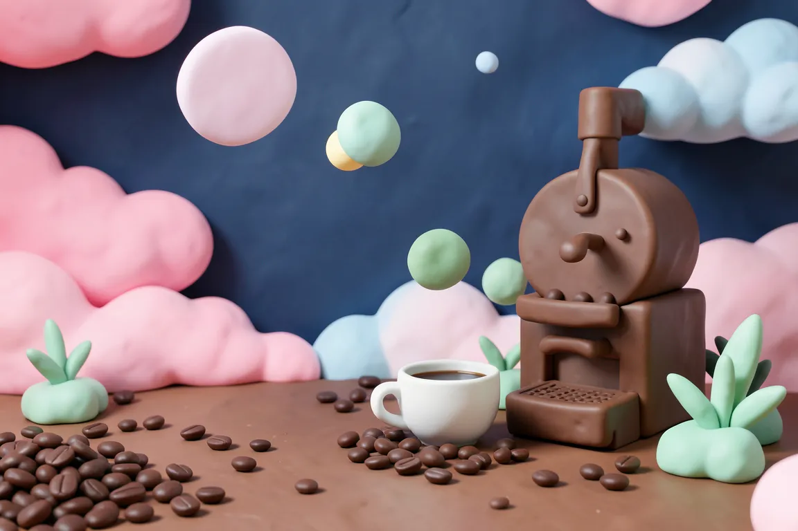

Oppblåste, avrundede 3D-former i myke pastellfarger med doble indre skygger og en myk ytre skygge, som modelleire. Det fulgte etter neomorfisme og flat illustrasjon og gjør grensesnittet til leketøy.

Kjerneidé
Grensesnittet er et leketøy: myke, oppblåste former med farge gjør skjermen vennlig og berørbar.
Designprinsipper
Gi beholdere en radius på 24px til 40px og knapper en radius på 999px.
Bygg dybde med 3 skygger: en ytre myk skygge (0 16px 32px ved 20 %), et indre lyst høylys (inset 8px 8px 16px hvit ved 60 %) og et indre mørkt (inset -8px -8px 16px ved 12 %).
Bruk pastellfyll med metning på 40 % til 70 % og lyshet på 70 % til 88 %; bruk 3 til 5 fargetoner på én side.
Sett overskrifter i en avrundet, tung displayskrift på 40px eller større og brødtekst i en avrundet sans på 16px.
Blås opp 3D-ikoner og illustrasjoner så de ser ut som leire: runde former, ingen skarpe kanter, en lysere kant på 2px.
La former sveve med 8px til 24px forskyvning og gi hovedobjektet en mild vipping på 6px til 10px.
Hold tekst på pastell ved kontrast 4,5:1 eller mer ved å bruke en mørk marineblå (#2B2D54) til brødtekst.